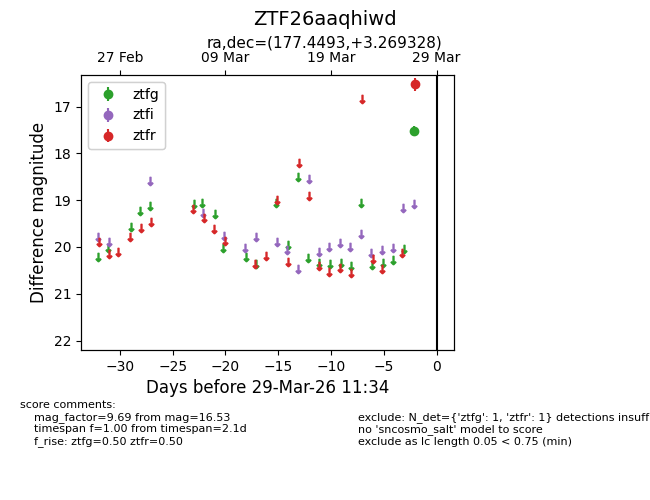
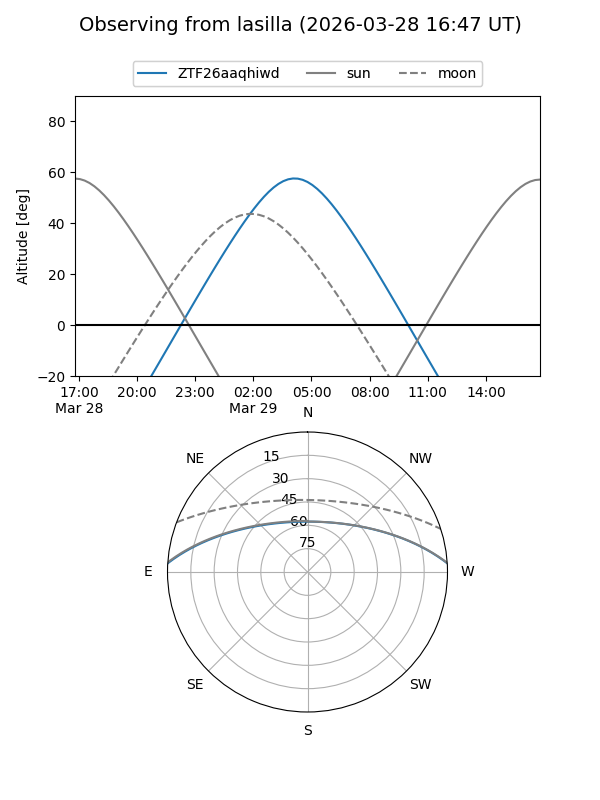
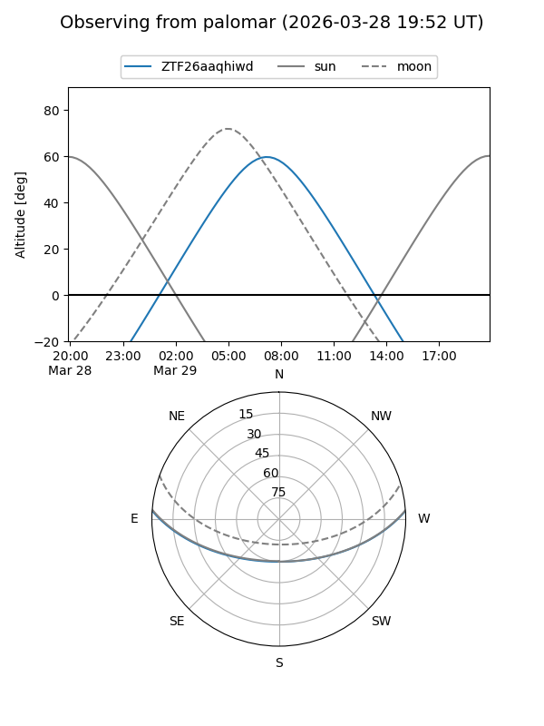

ZTF26aaqhiwd
Target ZTF26aaqhiwd at 2026-03-29 11:37
Aliases and brokers:
FINK: link
Lasair: link
ALeRCE: link
alt names
ZTF26aaqhiwd (ztf,fink_ztf)
Coordinates:
equatorial (ra, dec) = 177.4493,+3.26933
equatorial (HMS+DMS) = 11:49:47.82,+03:16:09.58
galactic (l, b) = (268.5777,+61.95754)
Flags:
Photometry:
last ztfg=17.53, ztfr=16.53
1 ztfg, 1 ztfr detections
Lightcurve

Visibility


Additional plots